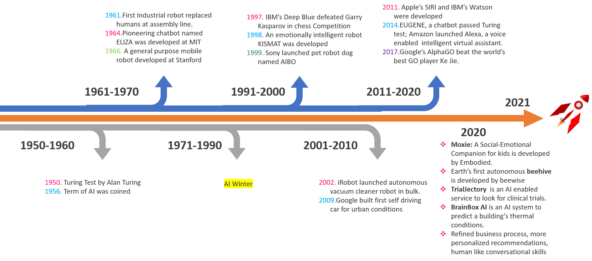
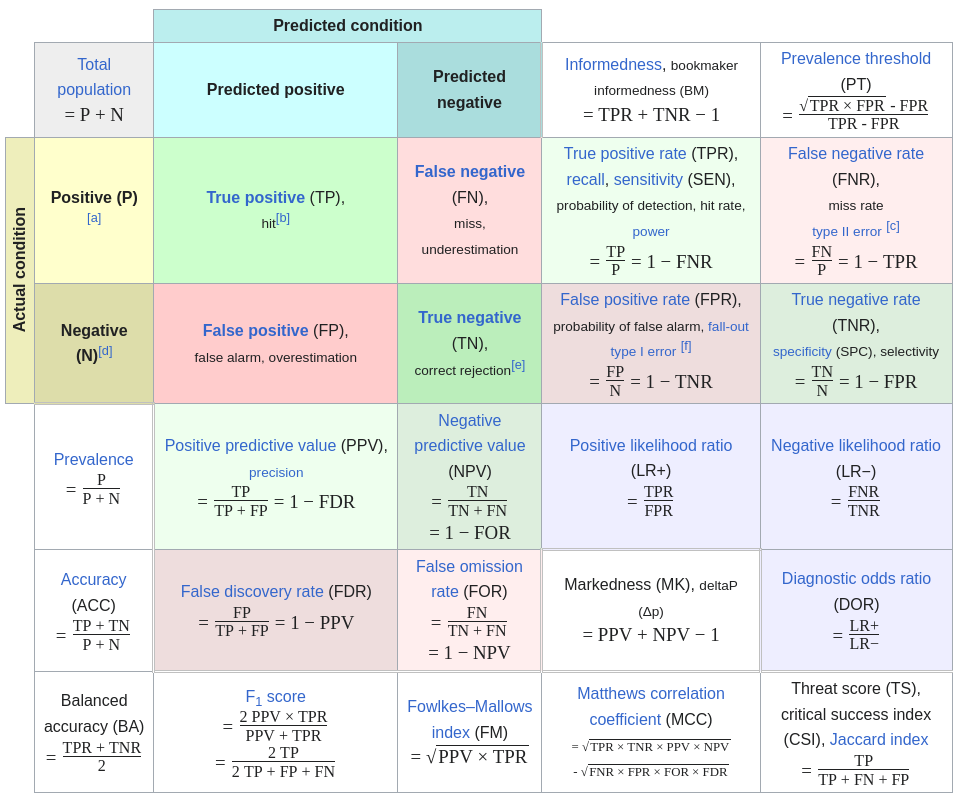
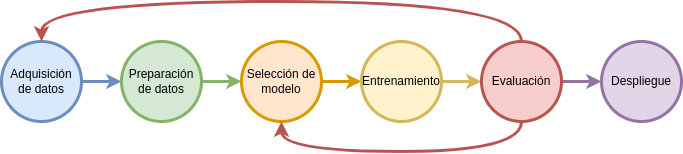
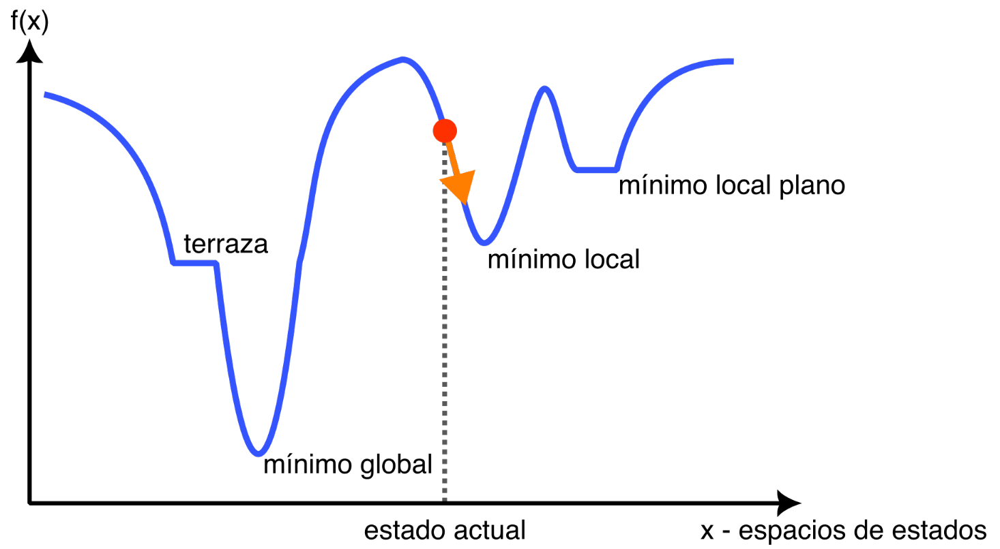

Inteligencia Artificial aplicada al sector agropecuario
Presentador: Federico Zacchigna (fzacchigna@fi.uba.ar)
Ariel Lutenberg, Pablo Gomez, Celeste Corominas y Christian Yanez Flores
@lse.posgrados:
https://lse-posgrados.fi.uba.ar/
https://www.instagram.com/lse.posgrados/
Facultad de Ingeniería, Universidad de Buenos Aires
🧠 Parte 1: ¿Qué es la Inteligencia Artificial?
🎯 Objetivo
✅ Que los participantes comprendan qué es (y qué no es) la IA
🔍 Conozcan los distintos tipos de IA
🧠 Algunos nombres populares
| 🤖 Inteligencia Artificial (IA) | Término general |
| 📈 Machine Learning (ML) o Aprendizaje Automático | Subconjunto de IA que aprende de datos |
| 🧠 Red Neuronal Artificial (ANN) | Subconjunto de ML basado en redes neuronales |
| 🌊 Deep Learning (DL) o Aprendizaje Profundo | Subconjunto de ANN basado en redes neuronales profundas |
🤖 ¿Qué es la Inteligencia Artificial?
Definición de acuerdo al test de Turing
Propuesto por Alan Turing en 1950, es una prueba para determinar si una máquina puede mostrar un comportamiento inteligente indistinguible del de un humano.
🤖 ¿Qué es la Inteligencia Artificial?
Definición de acuerdo al test de Turing
Una persona (el evaluador) chatea con dos entidades: una es humana y la otra es una máquina. Si el evaluador no puede distinguir cuál es la máquina, se dice que la IA pasó el test.

🤖 ¿Qué es la Inteligencia Artificial?
Una definición más simple
La IA es la capacidad de una máquina para realizar tareas que normalmente requieren inteligencia humana.
⚠️ No se trata de una máquina que “piensa como un humano”, sino que imita comportamientos inteligentes.
🤖 ¿Qué es la Inteligencia Artificial?
📌 Algunos ejemplos simples
- 🧑 Reconocer el tipo de plantación en base a imágenes satelitales como las de Google Maps
- 🌧️ Pronosticar lluvias
- 🌐 Traducir idiomas en tiempo real
- 🌿 Recomendar tratamiento para una planta enferma
- 🍎 Estimar grado de maduración
🤖 ¿Qué es la Inteligencia Artificial?
🧪 Los dos problemas principales a resolver
- 🏷️ Clasificación
- 📈 Estimación (regresión)
🧠 Tipos de IA
⚙️ Por su función
- 📊 Análisis o predicción de datos: detecta patrones, predice resultados
- 🎨 Generación de datos: crea contenido nuevo (texto, imágenes, audio)
🧠 Tipos de IA
📚 Por el tipo de aprendizaje
- ✅ Supervisado: aprende de ejemplos etiquetados
- 🔍 No supervisado: detecta patrones sin saber qué es cada cosa
- 🎮 Reforzado: aprende por ensayo y error
📚 Breve historia de la IA
🧭 Parte 2: ¿Cómo funciona un proyecto de IA?
Un recorrido de punta a punta por las etapas fundamentales.
🔢 1. Adquisición de datos
🧠 ¿Qué son los datos?
“Los datos son la materia prima de la inteligencia artificial.”
- Fotos, texto, números, sensores, audio, videos
- Todo lo que usamos para “enseñar” a la IA
🔢 1. Adquisición de datos
📥 Fuentes comunes
- Formularios de clientes
- Historial de ventas
- Sensores (IoT)
- Redes sociales
- Bases de datos abiertas
- Web scraping
🔢 1. Adquisición de datos
📊 Datos estructurados vs no estructurados
- Datos estructurados: organizados en tablas, con filas y columnas.
Ejemplo: Excel, bases de datos SQL - Datos no estructurados: no siguen un formato fijo.
Ejemplo: imágenes, audio, videos, texto libre
🔢 1. Adquisición de datos
📊 Datos estructurados vs no estructurados
🎯 ¿Por qué importa esta distinción?
- Los datos estructurados son más fáciles de analizar automáticamente
- Los no estructurados requieren técnicas más complejas
- La mayoría de los datos del mundo son no estructurados ...
- ... y además están desordenados, desprolijos, incompletos, etc.
🔢 1. Adquisición de datos
🚨 Importancia de la calidad
“Basura entra, basura sale” (garbage in, garbage out)
Un modelo solo puede aprender de lo que ve.
🧹 2. Preparación de datos
Antes de entrenar, hay que "ordenar la casa".
🧹 2. Preparación de datos
🔧 Tareas clave
- Limpieza: errores, valores faltantes o inconsistencias
- Etiquetado: indicar qué es cada cosa
- Balanceo: evitar que ignore lo poco común
🧹 2. Preparación de datos
⚠️ Problemas comunes
- 📉 Datos incompletos o desactualizados
- 🎯 Sesgos en los datos
- ⚖️ Desbalance en los datos
- 🔐 Información sensible
- 📦 Formato inconsistente
- 🧩 Datos duplicados o ruidosos
- 🌐 Datos no estructurados sin etiquetar
🧹 2. Preparación de datos
🚨 Esta etapa puede tomar el 80% del tiempo del proyecto 🚨
🧠 3. Diseño de algoritmos / modelos
¿Qué es un modelo?
“Un modelo es una representación matemática de la realidad que intenta aprender patrones.”
No “piensa”: detecta correlaciones y repite comportamientos.
🧠 3. Diseño de algoritmos / modelos
¿Cómo aprende?
Como un niño: ve ejemplos y generaliza.
🧠 3. Diseño de algoritmos / modelos
🔍 Ejemplo
- Le muestro 1000 imágenes de frutas etiquetadas
- Aprende los patrones de cada una
- Luego, si le muestro una nueva imagen, indica si es o no una fruta
🧠 3. Diseño de algoritmos / modelos
📌 No hay una única IA. Existen muchos modelos para tareas distintas: clasificar, predecir, generar...
⚙️ 4. Entrenamiento e inferencia
📚 Entrenamiento
(Cuando se utilizan los datos)
- 🧠 Proceso donde el modelo “aprende” de los datos
- ⏱ Puede tomar minutos o semanas
- 💻 Son necesarias computadoras potentes (GPUs)
- ⚡ Se utiliza mucha energía
⚙️ 4. Entrenamiento e inferencia
🔮 Inferencia
(Cuando el modelo usa lo aprendido)
- Detectar una cara
- Predecir el precio de una casa
- Generar un texto
⚙️ 4. Entrenamiento e inferencia
Analogía: Entrenar es como estudiar para un examen. Inferir es como dar el examen.
📏 5. Evaluación del modelo
¿Cómo sabemos si funciona?
Probamos con datos nuevos que nunca vio.
📏 5. Evaluación del modelo
Métricas clave (clasificación)
- Precisión: ¿cuántas veces acierta?
- Recall: ¿detecta lo importante?
- F1 Score: balance entre ambas
- Curvas de error o aciertos (para visualizar)
📏 5. Evaluación del modelo
Métricas clave (clasificación)
📌 Ejemplo
¿Qué es peor?
- Decir que estás sano cuando estás enfermo
- O decir que estás enfermo cuando estás sano
💡 Depende del contexto. Por eso se elige la métrica según el caso.
📏 5. Evaluación del modelo
Métricas clave (clasificación)
Una idea nomas de la complejidad que tiene esto
📏 5. Evaluación del modelo
Métricas clave (regresión)
- Error cuadrático medio (MSE): Penaliza más los errores grandes. Muy usado en regresión.
- Error absoluto medio (MAE): Más fácil de interpretar. Menos sensible a valores extremos.
- R-squared (R²): Brinda información sobre la bondad del ajuste del modelo a los datos.
🌍 6. Despliegue
🌍 6. Despliegue
¿Qué significa desplegar?
“Poner la IA a funcionar en el mundo real.”
Puede ser una app, un sitio web, un robot, etc.
🌍 6. Despliegue
Desafíos reales
- Rendimiento: ¿procesa muchos datos?
- Retardo: ¿responde rápido?
- Escalabilidad: ¿soporta muchos usuarios?
- Mantenimiento: ¿sigue funcionando bien?
- Drift de datos: ¿cambian los datos con el tiempo?
🔁 Muchos modelos necesitan reentrenarse periódicamente.
🔁 RESUMEN
Un resumen visual de todo el proceso:
✅ Ideas clave
- Un proyecto de IA es mucho más que “crear un modelo”.
- El 80% del trabajo está en los datos y su evaluación.
- Desplegar la IA con éxito requiere pensar en los requerimientos de la solución y las limitaciones del mundo real.
🚜 Parte 3: Aplicaciones reales de la IA
🎯 Objetivo
Que los participantes se vayan con una idea clara de para qué sirve la IA hoy, cómo se aplica en distintas industrias y casos reales que ya están impactando la vida y el trabajo, incluyendo el sector agropecuario.
🔎 IA por industria
- Salud: Diagnóstico por imágenes, análisis de radiografías, detección temprana de enfermedades, asistencia virtual médica
- Finanzas: Detección de fraudes, scoring crediticio, trading algorítmico, atención automatizada
- Retail: Recomendaciones personalizadas, predicción de demanda, gestión de inventarios
- Manufactura: Mantenimiento predictivo, control de calidad con visión artificial, automatización
- Educación: Plataformas adaptativas, evaluación automática, asistentes virtuales
- Agricultura: Visión para monitoreo de cultivos, predicción de clima/rendimiento, detección de plagas, robots agrícolas, drones, análisis de suelo
🧠 Casos de uso por tipo de IA
Ejemplos de aplicación práctica en distintos contextos.
🧠 Casos de uso por tipo de IA
Ejemplos de aplicación práctica en distintos contextos.
1. Recomendación
- Netflix, Spotify, Amazon: predicen lo que te puede interesar
- E-commerce agro: sugerencias según campañas anteriores o clima
🧠 Casos de uso por tipo de IA
Ejemplos de aplicación práctica en distintos contextos.
2. Visión por computadora
- Detectar enfermedades en cultivos
- Clasificación de frutas o granos por calidad
- Control de defectos en productos industriales
- Análisis de imágenes satelitales
🧠 Casos de uso por tipo de IA
Ejemplos de aplicación práctica en distintos contextos.
3. Procesamiento de lenguaje natural (PLN)
- Análisis de sentimientos en textos, audios o videos
- Clasificación de texto
🧠 Casos de uso por tipo de IA
Ejemplos de aplicación práctica en distintos contextos.
4. IA generativa
- Generación de texto, imágenes, código
- Reportes automáticos
- Planes de siembra o resúmenes técnicos
🧠 Casos de uso por tipo de IA
Ejemplos de aplicación práctica en distintos contextos.
5. Predicción / modelado
- Predicción de ventas, precios, demanda, cosecha
- Modelos de clima, humedad, plagas
- Detección de enfermedades en ganado
🌾 Aplicaciones específicas en AGRO
🌾 Aplicaciones específicas en AGRO
🔍 Monitoreo inteligente de cultivos
- Detectar estrés hídrico
- Monitorear enfermedades
- Calcular rendimiento esperado
🌾 Aplicaciones específicas en AGRO
🤖 Maquinaria inteligente
- Tractores autónomos
- Pulverizadoras con ajuste automático
- Robots para cosecha en invernaderos
- Mantenimiento predictivo
🌾 Aplicaciones específicas en AGRO
📈 Predicción de rendimientos
- Modelos con clima, suelo, genética, historial
- Predicciones precisas y anticipadas
🌾 Aplicaciones específicas en AGRO
🐄 Ganadería de precisión
- Sensores para comportamiento animal
- Predicción de celo o enfermedades
- Granjas conectadas con IoT + IA
🌾 Aplicaciones específicas en AGRO
🌦️ Clima y decisiones agronómicas
- Modelos para lluvias, heladas, etc.
- IA que sugiere si sembrar, regar o aplicar insumos.
🌾 Aplicaciones específicas en AGRO
📊 Aplicaciones comerciales
- Oportunidades de mercado
- Segmentación de productores
- Reportes automáticos para técnicos
✅ Ideas clave
- La IA ya se usa en muchas industrias, incluyendo el agro
- El objetivo no es reemplazar al humano, sino potenciar sus capacidades
- Con datos, creatividad y buenas preguntas, las oportunidades son enormes
⚖️ Parte 4: Desafíos éticos, técnicos y sociales
Invitación a la reflexión, el debate y la conciencia crítica sobre los riesgos y responsabilidades de la IA.
🎯 Objetivo
- 🤖 La IA no es neutra ni perfecta
- 👥 Requiere decisiones humanas en cada etapa
- 🌎 Tiene impactos en sociedad, ambiente y economía
🧠 1. Sesgos en la IA
“Los modelos aprenden de datos. Si los datos están sesgados, los modelos también.”
🧠 1. Sesgos en la IA
📌 ¿Qué tipos de sesgos existen?
- Sesgo de datos: Ej: currículums solo de hombres
- Sesgo algorítmico: Técnicas que favorecen ciertos resultados
- Sesgo de interpretación: Cómo usamos o leemos los resultados
🧠 1. Sesgos en la IA
🎯 Ejemplos reales
- Reconocimiento facial con errores en personas racializadas
- Modelos de crédito que discriminan por grupo social
🔔 Conclusión: la IA puede perpetuar desigualdades si no se diseña con cuidado.
🔍 2. Explicabilidad
“¿Podemos entender por qué la IA toma una decisión?”
🔍 2. Explicabilidad
❓ ¿Qué es?
La capacidad de una IA para explicar sus decisiones.
🔍 2. Explicabilidad
⚠️ Problemas
- Modelos complejos (deep learning) = cajas negras
- Difícil justificar recomendaciones o clasificaciones
🔍 2. Explicabilidad
💡 ¿Por qué importa?
En salud, justicia o finanzas, no basta con que funcione: hay que justificar.
🔐 3. Privacidad y protección de datos
“La IA necesita datos, pero los datos pueden ser sensibles.”
🔐 3. Privacidad y protección de datos
🔒 Riesgos
- Filtraciones de información personal
- Vigilancia o uso sin consentimiento
- Entrenamiento con texto, imágenes, voz sin permiso
🔐 3. Privacidad y protección de datos
⚖️ Marco legal
- GDPR (Europa)
- Leyes locales de protección de datos
- ¿Quién responde ante errores de IA?
❗ Importante: IA y privacidad deben ir de la mano.
🌱 4. Sustentabilidad y consumo energético
“Entrenar grandes modelos requiere energía... mucha energía.”
🌱 4. Sustentabilidad y consumo energético
⚡ Impacto ambiental
- Modelos como GPT consumen energía equivalente a una ciudad
- Uso intensivo de GPUs y centros de datos
🔔 Preguntas clave:
¿Vale la pena el consumo? ¿Quién lo regula?
🌱 4. Sustentabilidad y consumo energético
🌍 Alternativas
- Modelos más pequeños
- Entrenamiento distribuido
- Uso de energía renovable
👥 5. Impacto en el trabajo y la sociedad
“La IA no solo mejora tareas, también transforma roles laborales.”
👥 5. Impacto en el trabajo y la sociedad
🧑 Cambios en el empleo
- Automatización de tareas repetitivas
- Nuevos roles: curadores, auditores éticos
- Redefinición de profesiones tradicionales
👥 5. Impacto en el trabajo y la sociedad
🤖 Desigualdades
- Acceso desigual a tecnología
- Brechas entre países o regiones
🧭 Se debe buscar una transición justa con capacitación, regulación y enfoque humano.
🧩 6. ¿Cómo prepararnos?
“El futuro no se predice, se diseña.”
- 📚 Educación continua
- 🗣 Participar en debates éticos y normativos
- 🌱 Promover IA responsable, inclusiva, sostenible
- 🚀 Usar la IA como herramienta de transformación positiva
✅ Reflexiones clave
- La IA no es buena ni mala: depende de cómo se use
- Diseñar con ética, justicia y sostenibilidad
- Puede ser una herramienta de equidad o exclusión
⚙️ Parte 5: Nos ponemos más técnicos
🎯 Objetivo
- Introducir los fundamentos matemáticos básicos detrás de la IA
- Entender el proceso de entrenamiento de un modelo
- Explicar cómo funciona el gradiente descendente y el backpropagation
- Desmitificar lo complejo, sin fórmulas pesadas
🧮 1. ¿Qué es un modelo matemático?
Un modelo de IA es básicamente una función matemática que intenta encontrar la mejor relación entre entradas y salidas.
🧮 1. ¿Qué es un modelo matemático?
Ejemplo sencillo:
- Entradas: altura, peso, edad
- Salida: probabilidad de tener diabetes
📌 El modelo busca una función que diga: f(altura, peso, edad) → probabilidad
🔍 Esa función puede ser muy simple, como una función lineal o tan compleja como se quiera, como una red neuronal.
El modelo tiene parámetros.
🧠 2. ¿Cómo aprende un modelo?
“Aprender” significa ajustar los parámetros de esa función matemática hasta que acierte lo más posible.
🧠 2. ¿Cómo aprende un modelo?
Proceso general:
- Inicio aleatorio de los valores
- Comparación entre predicción y resultado real
- Cálculo del error
- Ajuste de los parámetros
📌 Todo este proceso es parte de la optimización.
🔻 3. Gradiente descendente
Es el algoritmo más común para minimizar el error en un modelo de IA.
🔻 3. Gradiente descendente
Ejmplo de función de error a optimizar 
🔻 3. Gradiente descendente
Analogía simple:
- Estás en la cima de una montaña con los ojos vendados
- Querés bajar al valle: el punto con menor error
- Das pasos en la dirección de la mayor pendiente
📉 El modelo calcula la pendiente (derivada) y ajusta los parámetros en dirección contraria al gradiente.
🔁 Este proceso se repite miles o millones de veces.
🔄 4. ¿Qué es el backpropagation?
Es el algoritmo que permite entrenar redes neuronales eficientemente.
🔄 4. ¿Qué es el backpropagation?
¿Qué hace?
- Calcula la influencia de cada parámetro sobre el error final
- Propaga ese error hacia atrás
- Ajusta cada conexión según su contribución
🔄 4. ¿Qué es el backpropagation?
Analogía simple: Desastre de Chernóbil: Secuencia de Eventos
- 25 de abril – Día: Preparativos para una prueba de seguridad que simula un corte de energía.
- Tarde-noche: La prueba se retrasa por la alta demanda eléctrica.
- ~11:00 PM: Se reanuda la prueba; el reactor baja demasiado de potencia.
- Intervención manual: Se retiran demasiadas barras de control, rompiendo protocolos de seguridad.
- 26 de abril – ~1:23 AM: Inicia la prueba con sistemas de seguridad desactivados.
- Subida de potencia: Ocurre un aumento brusco por fallos de diseño y condiciones inestables.
- Explosiones: Dos explosiones destruyen el reactor y exponen el núcleo.
- Incendios y radiación: Se liberan grandes cantidades de material radiactivo.
🧠 Así, cada parte del modelo se corrige según su responsabilidad.
📉 5. Bonus: Sobreajuste vs Subajuste
Dos problemas comunes durante el entrenamiento de modelos.
📉 5. Bonus: Sobreajuste vs Subajuste
🔴 ¿Qué es el sobreajuste?
- El modelo aprende demasiado bien los datos de entrenamiento
- Incluso memoriza el ruido o los errores
- Funciona excelente con los datos que ya vio, pero falla con nuevos datos
- ❌ Consecuencia: alta precisión en entrenamiento, mala en validación
📉 5. Bonus: Sobreajuste vs Subajuste
🔵 ¿Qué es el subajuste?
- El modelo es demasiado simple para captar los patrones reales
- No logra aprender bien ni siquiera los datos de entrenamiento
- ❌ Consecuencia: error alto en entrenamiento y validación
📉 5. Bonus: Sobreajuste vs Subajuste
Ejemplos

{kind=link}
📉 5. Bonus: Sobreajuste vs Subajuste
⚖️ ¿Cómo evitar estos problemas?
- 📊 Dividir bien los datos (entrenamiento / validación / prueba)
- 📉 Regularización (evita modelos demasiado complejos)
- 📈 Usar más datos para generalizar mejor
- 🧪 Validación cruzada para evaluar el modelo con varios subconjuntos
🎯 El objetivo: generalizar bien, no memorizar ni simplificar en exceso.
🔧 6. Bonus: Hiperparámetros
Durante el entrenamiento tenemos algunos parámetos de ajuste (“diales”):
- Tasa de aprendizaje: qué tan grande es cada paso
- Épocas: cuántas veces recorremos todos los datos
- Batch size: cuántos datos analizamos a la vez
🎯 Elegir bien estos valores impacta el rendimiento y tiempo de aprendizaje del modelo.
✅ Cierre de la Parte Técnica
- No hace falta ser matemático para usar IA
- Pero entender lo básico permite mejores decisiones
- La IA no es magia: es optimización + datos
- Si bien no es 100% necesario, entender estos procesos ayuda a:
- Evaluar modelos con sentido crítico
- Saber qué ajustar si algo no funciona
- Comunicarte mejor con equipos técnicos
¿Preguntas?
Gracias por su atención
Presentador: Federico Zacchigna (fzacchigna@fi.uba.ar)
Ariel Lutenberg, Pablo Gomez, Celeste Corominas y Christian Yanez Flores
@lse.posgrados:
https://lse-posgrados.fi.uba.ar/
https://www.instagram.com/lse.posgrados/
Facultad de Ingeniería, Universidad de Buenos Aires